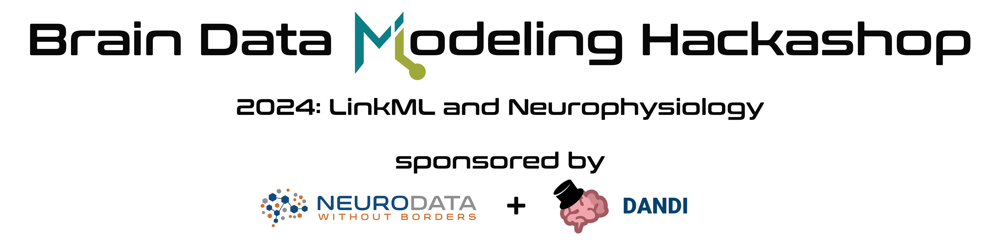

The objective of the event is to bring the neurophysiology data and standards developer community together to evaluate the use of LinkML to create common schema and facilitate integration of data across standards and resources. The goal is to create LinkML based schemas that integrate information across existing efforts in data modeling for neuroscience and leveraging existing standards and resources, e.g, NWB, AIND, OpenMINDS, DANDI, and BICAN. To support large scientific data, a second goal is to extend LinkML for array type data structures required, e.g, for NWB and OME-Zarr. This is an invitation-only event.
Attendees will need to reserve their own lodging. A broad range of hotels and housing options are available in Downtown Berkeley within walking distance from ICSI, e.g:
The main program starts at noon on Feb.5 to allow attendees taking morning flights to be able to get to ICSI on time. See here for the latest agenda.
To ease collaborative editing of projects we are managing projects in the following Google Docs:
Please see the Code of Conduct for all NWB events.
This website and related content were prepared as an account of or to expedite work sponsored at least in part by the United States Government. While we strive to provide correct information, neither the United States Government nor any agency thereof, nor The Regents of the University of California, nor any of their employees, makes any warranty, express or implied or assumes any legal responsibility for the accuracy, completeness, or usefulness of any information, apparatus, product, or process disclosed, or represents that its use would not infringe privately owned rights. Reference herein to any specific commercial product, process, or service by its trade name, trademark, manufacturer, or otherwise, does not necessarily constitute or imply its endorsement, recommendation, or favoring by the United States Government or any agency thereof, or The Regents of the University of California. Use of the Laboratory or University’s name for endorsements is prohibited. The views and opinions of authors expressed herein do not necessarily state or reflect those of the United States Government or any agency thereof or The Regents of the University of California. Neither Berkeley Lab nor its employees are agents of the US Government. Berkeley Lab web pages link to many other websites. Such links do not constitute an endorsement of the content or company and we are not responsible for the content of such links.